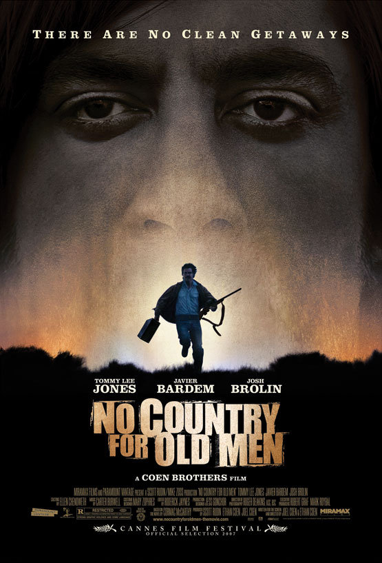

| Watched | ||
|---|---|---|
| Nominations | |||
|---|---|---|---|
| Category | Nominees | Result | Voted |
| Best Picture | Ethan Coen, Joel Coen, and Scott Rudin | Won | |
| Actor in a Supporting Role | Javier Bardem | Won | |
| Directing | Ethan Coen and Joel Coen | Won | |
| Writing (Adapted Screenplay) | Ethan Coen and Joel Coen | Won | |
| Cinematography | Roger Deakins | Nominated | |
| Film Editing | Roderick Jaynes | Nominated | |
| Sound Editing | Skip Lievsay | Nominated | |
| Sound Mixing | Craig Berkey, Greg Orloff, Peter Kurland, and Skip Lievsay | Nominated | |